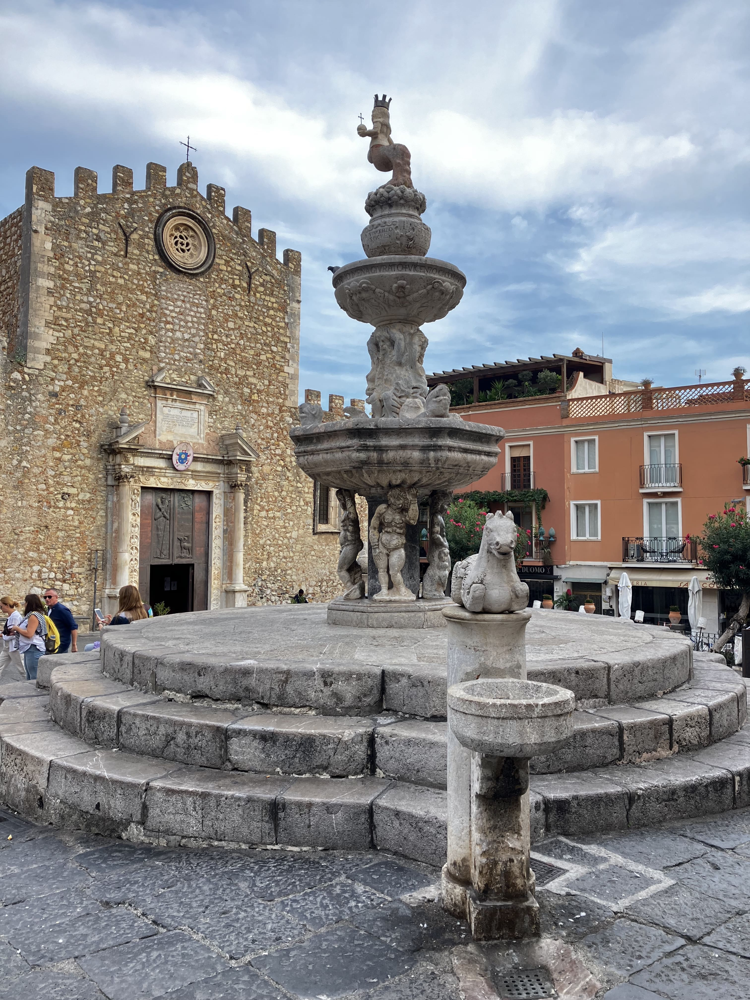
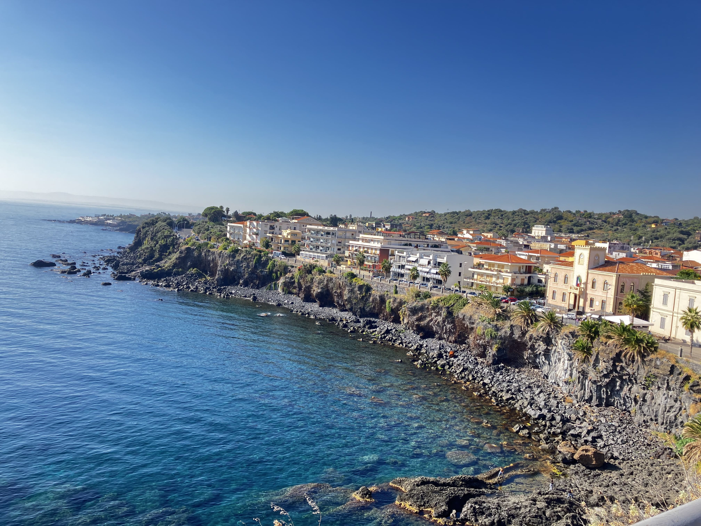
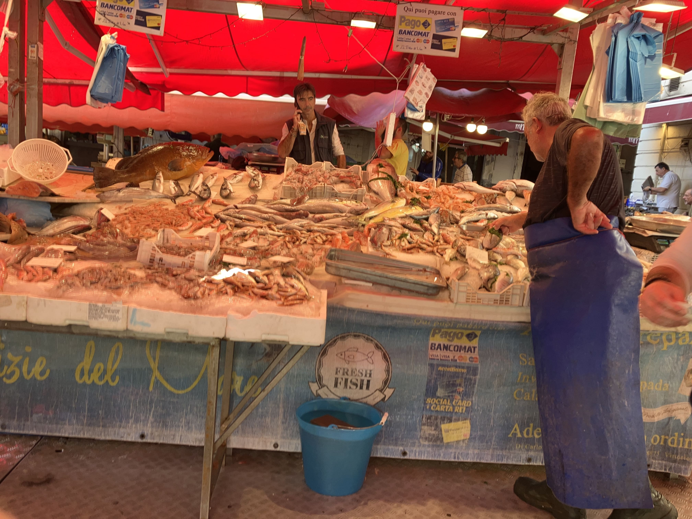

- タオルミーナ大聖堂とドゥオモ前広場
-
ドゥオーモというと大きな大聖堂を連想しますが、タオルミーナのドゥオーモは石造りで素朴、そしてこぢんまりとした造り。しかしながら積み重ねられてきた歴史が建物に重厚さを加え、この小さなエリアに流れたそれぞれの時代の建築様式が、ここにしかないオリジナリティあふれる大聖堂を造り上げています。
- チェファルー
-
シチリア島北部の小さな海辺の街、チェファルー。かつては海と絶壁に囲まれた静かな漁村でしたがリゾート地として発達し、夏はヨーロッパ中から訪れる多くの観光客で賑わいます。
- カーポ市場
-
通りの建物にお店が入っていて、それらのお店が目の前の路上にまで店を広げているという形態が主流。 狭い通りに目一杯お店が広がっています。 路上にもテーブルやショーケースが置かれており、観光客も多く活気があり。眺めながら歩くだけで楽しいところです。